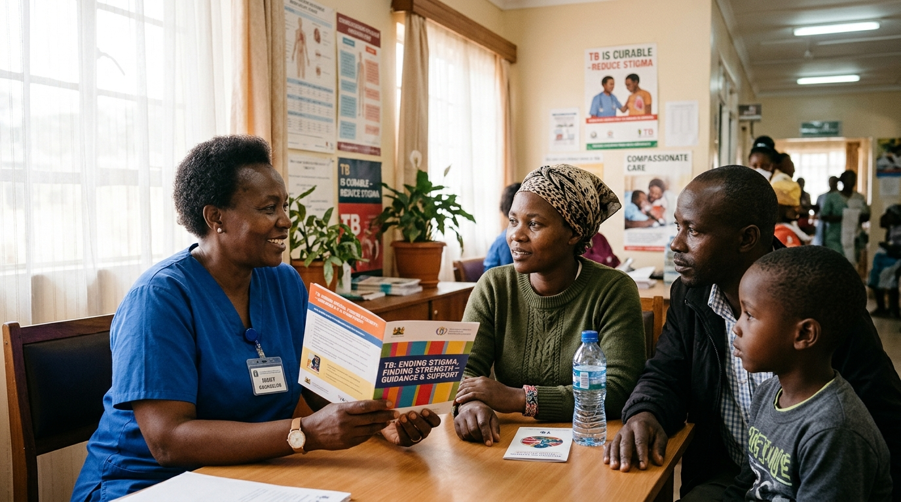

Learn, share and grow with global TB expertise
Practical clinical courses, interactive webinars, expert faculty, and open-access implementation toolkits designed for frontline healthcare professionals and national TB programmes worldwide.

Featured courses
Evidence-based training for prevention, rapid molecular diagnosis, and patient-centred TB treatment.

Source and Contact Investigation for Tuberculosis
Systematically identify, screen, and evaluate household contacts, trace transmission chains, and initiate preventive treatment.

Simple One-Step (SOS) Stool Testing for Tuberculosis
Master the KNCV Simple One-Step (SOS) stool processing method to enable rapid molecular GeneXpert diagnosis without invasive sputum collection.

Over a century of dedication to ending tuberculosis
KNCV TB Plus (KNCV) is a global non-profit organisation. Since its establishment in 1903, KNCV’s mission has been to save lives and end human suffering through the promotion of health and the global elimination of tuberculosis (TB) and other related diseases.
People-first approach
Innovative, effective, and sustainable strategies that demonstrate positive impact on people’s health.
System readiness
Scaling up effective interventions for TB prevention, diagnosis, and treatment worldwide.
Learning opportunities & key benefits
Competent, well-supported health workforces are essential to implementing the End TB Strategy and achieving quality patient outcomes across national health systems.
Self-paced e-learning
Learn anytime with structured online modules tailored for busy clinicians and programme staff.
Expert-led cohorts
Facilitated courses with live clinical sessions, case reviews, and international peers.
Recognised certificates
Earn verified KNCV TB Plus certificates upon completing course assessments.
Practical field tools
Standard operating procedures, triage algorithms, job aids, and real-world case studies.
Free & accessible
Open-access, straightforward materials designed for high-burden and low-bandwidth settings.
Global community
Connect directly with National TB Programmes, researchers, and healthcare workers across countries.
Featured resources & publications
Latest operational guides, annual reports, clinical articles, and technical webinars from KNCV TB Plus.

Annual Knowledge Report 2026
Comprehensive synthesis of KNCV’s global technical assistance, operational research findings, and patient-centred innovations.
Download ↓Right Diagnosis, Right Treatment: Patient Triage Approach
Coupling rapid molecular tests with shorter DR-TB treatment regimens.
 VIDEO · 12 MIN
VIDEO · 12 MIN
Digital Health Along the Patient Pathway
Empowering decision-making for patients, clinicians, and National TB Programmes.
Find and Treat All Missing Persons with TB (FTMP)
Practical district-level operational guide for high TB-burden countries.

Time to Treatment Initiation of DR-TB Patients
Multi-state operational study on accelerating access to drug-resistant TB care.
Together, we can end TB.
Explore accredited TB training and develop the knowledge to make a difference.